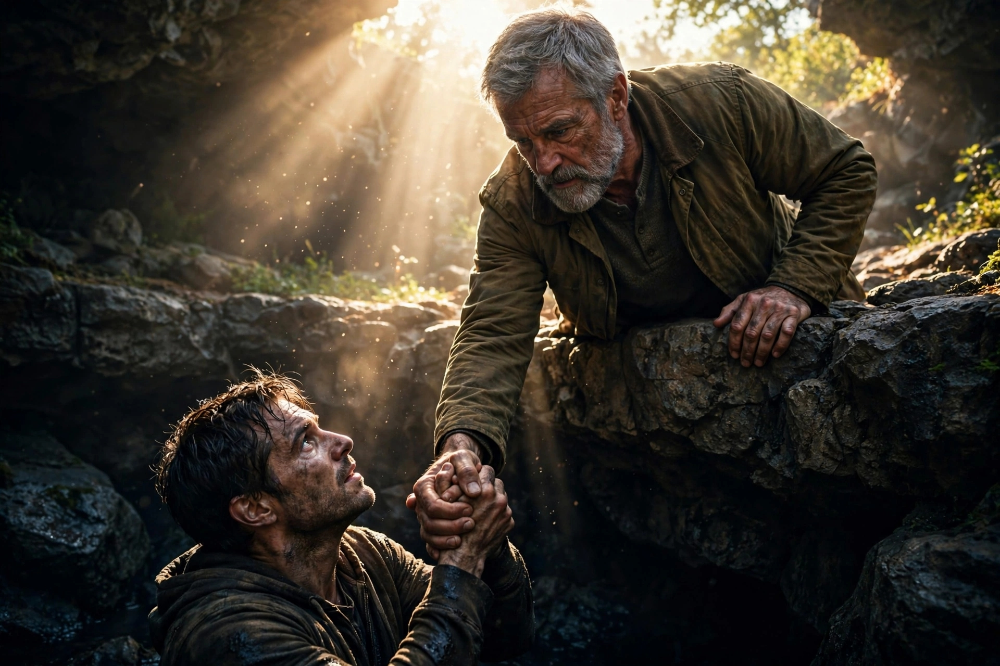

Pilar 12: Legado do Cuidado
Chegados ao último pilar, a abordagem deve ser incisiva e clínica: a recuperação real não aceita paliativos ou métodos baseados apenas na força de vontade humana. O "melhor" tratamento é aquele que integra a rigorosa gestão comportamental e emocional com a libertação espiritual absoluta, reconhecendo o homem como um ser biopsicossocial e pneumático. O Amparo HAZAQ não oferece apenas sobriedade, mas a fundação para uma vida nova, alinhada com a Verdade e capacitada pelo Espírito Santo. Negligenciar qualquer uma dessas esferas é garantir a reincidência.
"A verdadeira cura não ocorre apenas pela cessação do sintoma, mas pela reestruturação do caráter e a submissão total da vontade àquele que é o autor da vida e da liberdade." — Relato Clínico-Teológico
A Sagrada Escritura ratifica que a transformação integral é a única resposta eficaz para a condição humana caída:
"E conhecereis a verdade, e a verdade vos libertará." (João 8:32)
"Se, pois, o Filho vos libertar, verdadeiramente sereis livres." (João 8:36)
A sobriedade e a restauração não podem ser guardadas como um tesouro egoísta. O homem que foi curado tem o dever moral e espiritual de estender a mão, compartilhar o método e ajudar ativamente outros que ainda lutam nas trevas da adicção e das instabilidades sociais. O verdadeiro legado não é o que você acumulou de conhecimento para si, mas quantos você ajudou a erguer do precipício, tornando-se um instrumento de Deus para a libertação de outros lares.
"A maior honra que um homem pode receber não é ser servido, mas servir e resgatar os seus semelhantes da escravidão do vício e do desespero." — Enéas Carneiro
Exemplos práticos de como estender o cuidado no dia a dia:
O Pilar do Legado do Cuidado sela o compromisso de que a sua batalha não foi em vão, mas serviu como preparação para uma vida de impacto e serviço. A restauração completa da sua saúde física, mental e espiritual — com a ajuda do Parakletos — transforma você em um farol de esperança e uma ferramenta viva da justiça de Deus na terra.
"Irmãos, se algum homem chegar a ser surpreendido nalguma ofensa, vós, que sois espirituais, encaminhai o tal com espírito de mansidão; olhando por ti mesmo, para que não seas também tentado. Levai as cargas uns dos outros, e assim cumprirei a lei de Cristo." (Gálatas 6:1-2)
A estrutura foi entregue. O conhecimento foi passado. O método foi validado. O legado do cuidado depende agora da sua decisão irrevogável de viver em santidade, servir ao próximo e glorificar ao Criador todos os dias da sua vida.